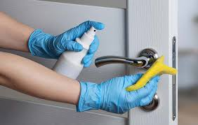

Cleaning Services
Home About Contact Us

Contact For Booking
Cleaning Strategies
If you want to Clean Your House, what do you need?
You need three things: dedication, the perfect techniques, and a healthy
diet plan. Those three things you can get on your own,
but you can give a boost to your results if you have this kind of information
that can help you. Here are some effective tips for cleaning House.
About Us
Guests can drive up to the Enviro-Master location in Warren, hop out and receive a touch-free disinfection service for their car's interior. According to a news release, Enviro-Master uses a non-toxic, non-corrosive and food-safe germicide that's dispensed from an electrostatic sprayer, basically the equivalent of a proton pack for germs.
Enviro-Master of Detroit's owner, Ketura Brandes, came up with the idea after the Michigan Department of Health and Human Services announced a three-week closure for indoor dining at restaurants. Brandes aimed this drive-thru service at food delivery drivers, who would see an increase in delivery orders as a result of the shutdown.
Brandes then decided to expand the sanitization service to law enforcement, first responders, Uber and Lyft drivers.
Despite the virus being fragile and not surviving easily outside of the human body, according to a report by the Associated Press, experts still recommend cleaning frequently touched areas.
About Us Contact Us